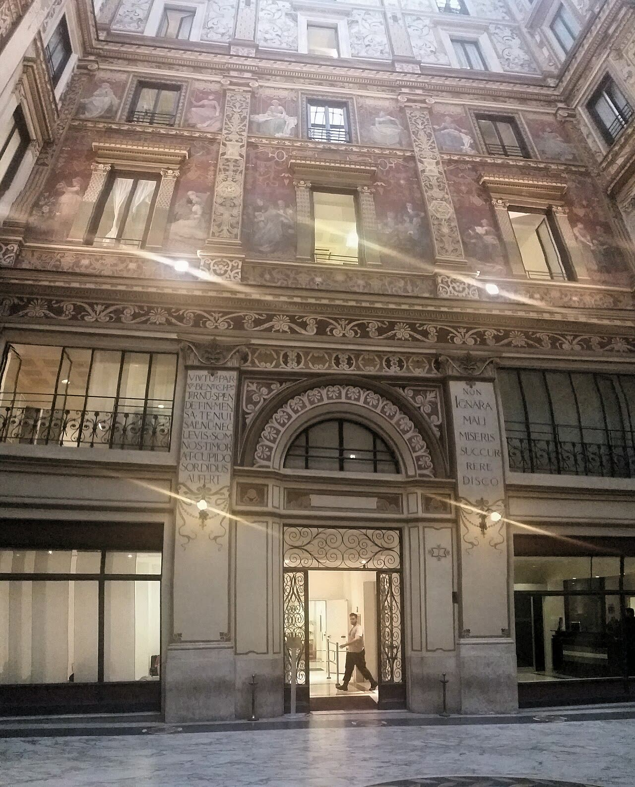

Il leghista Altieri proposto all'Anac: servono i due terzi delle commissioni
Dire «incompatibile» è presto: il nodo vero è il conflitto d'interessi, e chi vigila sugli appalti non dovrebbe sedere in Leonardo e Fincantieri.
Redazione Contrappunto · aggiornato il 06.11.2026


Il 5 novembre il Consiglio dei ministri ha proposto Trifone «Nuccio» Altieri come presidente dell'Anac, l'autorità che vigila sugli appalti pubblici e sulla prevenzione della corruzione. Altieri è un ex deputato, è stato responsabile Difesa della Lega, siede nel consiglio di Leonardo e presiede Fincantieri Infrastructure. Non è ancora nominato: servono il sì di due terzi dei componenti delle commissioni competenti di Camera e Senato, una nuova delibera e il decreto del Presidente della Repubblica. La legge esclude chi ha avuto cariche di partito nei tre anni prima e chi ha interessi in conflitto con l'Autorità. Intanto il vertice uscente, scaduto l'11 settembre, resta per 45 giorni al massimo, solo per l'ordinaria amministrazione.
Vedi di più: 12 parole spiegate, cosa si racconta
Cosa si raccontaLe opposizioni (Pd, M5s, Avs, Italia viva, +Europa, Azione) e l'associazione Libera dicono che Altieri è incompatibile per il divieto dei tre anni, perché è stato dirigente della Lega. Il Fatto Quotidiano e la Repubblica lo scrivono nei titoli come un fatto; la Repubblica Milano lo dà già «nominato», il Sole scrive che «guiderà» l'Anac, Rainews parla di «via libera». Il Foglio è più prudente e prevede che la nomina possa saltare; il Giornale racconta la protesta e la legge come una vittoria della Lega. Il governo risponde che proporre spetta a lui: «era nelle nostre competenze», dice Meloni; Salvini: «Conto che tutto sia assolutamente regolare». [il Fatto Quotidiano] [la Repubblica] [la Repubblica Milano] [Il Sole 24 Ore] [Rainews] [Il Foglio] [il Giornale] [il Giornale] [La Stampa] [ANSA] [ANSA] [La Notizia]
- Anac (Autorità nazionale anticorruzione)
- Un'autorità indipendente dal governo: vigila sugli appalti e i contratti pubblici e sulle regole contro la corruzione nelle amministrazioni. La guidano un presidente e quattro componenti, in carica sei anni e non rinnovabili.
- CdM (Consiglio dei ministri)
- La riunione del presidente del Consiglio e dei ministri, cioè il governo che decide collegialmente. Qui ha solo avviato la procedura.
- DPR (decreto del Presidente della Repubblica)
- L'atto firmato dal capo dello Stato con cui la nomina diventa effettiva. Arriva per ultimo, dopo il parere delle commissioni e una seconda delibera del governo.
- Consob (Commissione nazionale per le società e la borsa)
- L'autorità che vigila sulla Borsa e sulle società quotate. Nello stesso Consiglio il governo ha avviato la procedura per mettervi il deputato leghista Giulio Centemero.
- Zangrillo, Nordio, Piantedosi
- Paolo Zangrillo è il ministro della Pubblica amministrazione, che per legge propone il presidente dell'Anac; Carlo Nordio (Giustizia) e Matteo Piantedosi (Interno) devono essere d'accordo con la proposta.
- Parere delle commissioni a due terzi
- Le commissioni competenti di Camera e Senato devono dare parere favorevole con i due terzi dei loro componenti, non dei soli presenti; se il parere non c'è, la nomina non si fa. Quali commissioni siano la legge non lo dice. Se la maggioranza abbia da sola i due terzi non l'abbiamo verificato: nessuna testata ha fatto i conti.
- Articolo 13, comma 3, del decreto legislativo 150 del 2009
- La norma che regola la nomina del vertice dell'Anac. Esclude chi ha avuto incarichi elettivi o cariche di partito o sindacali nei tre anni prima, e chi ha interessi in conflitto con l'Autorità.
- Ordinaria amministrazione (proroga)
- Gli atti di gestione corrente. Con il decreto-legge del 5 novembre il collegio uscente può fare solo questi e quelli urgenti, per 45 giorni al massimo dall'entrata in vigore del decreto. Quella data non l'abbiamo verificata: la scadenza esatta non si può calcolare.
- Leonardo
- Il gruppo italiano della difesa e dell'aerospazio, partecipato dal ministero dell'Economia, che presenta una sua lista per il consiglio di amministrazione. Altieri vi è entrato nel 2023, nella lista del ministero.
- Fincantieri Infrastructure
- Società del gruppo Fincantieri, i cantieri navali a controllo pubblico, che lavora nelle grandi infrastrutture. Altieri ne è presidente.
- Invimit
- La società di gestione del risparmio del ministero dell'Economia che gestisce e vende immobili pubblici. Altieri l'ha presieduta dal dicembre 2018.
- Libera
- L'associazione contro le mafie che ha diffuso una nota contro la scelta di Altieri.
- Il 5 novembre il governo ha avviato la procedura per fare presidente dell'Anac Trifone Altieri, già responsabile Difesa della Lega. Non è ancora una nomina: servono il sì di due terzi delle commissioni, una nuova delibera e il decreto del Quirinale.
- Opposizioni e Libera lo dicono incompatibile per il divieto delle cariche di partito nei tre anni prima, ma la legge non dice cos'è una «carica». La legge esclude anche chi ha interessi in conflitto: Altieri siede in Leonardo e presiede Fincantieri Infrastructure.
La Repubblica Milano titola che Altieri è stato «nominato». Non è vero: il governo ha solo avviato la procedura. Il Sole scrive che «guiderà» l'Anac, Rainews parla di «via libera». Il Fatto e la Repubblica vanno oltre: Altieri «è incompatibile». Il Giornale titola «Nomina indecente» tra virgolette: nel testo il M5s parla di atto «irresponsabile e indecente», non di quelle parole; la Stampa sbaglia l'articolo di legge. ANSA e il Foglio sono i più precisi. [19] [1] [25] [24] [17] [18] [21] [23]
Sull'incompatibilità il coro corre troppo. La legge vieta chi ha avuto «cariche in partiti politici» nei tre anni prima, ma non dice cos'è una carica. Nessuno ha sentito un giurista. E nello stesso decreto, per gli organismi che valutano i dipendenti pubblici, il divieto copre anche le collaborazioni con i partiti: per l'Anac no. Chi difende Altieri ha un appiglio. E il divieto non era una sorpresa: La Notizia lo ricordava il 14 agosto. [2] [3] [10]
Sulla sostanza, però, il coro ha ragione, e l'argomento più forte lo usano in pochi. Lo stesso comma esclude chi ha «interessi di qualsiasi natura in conflitto» con l'Autorità. Altieri siede nel consiglio di Leonardo e presiede Fincantieri Infrastructure; l'Anac vigila sugli appalti pubblici. Anche questa clausola va interpretata e nessuno si è espresso, ma qui l'interpretazione è meno incerta: il conflitto non dipende da cosa sia una «carica» e non scade dopo tre anni. Né il governo ha mostrato la «comprovata esperienza» anticorruzione che la legge chiede. [2] [6] [5] [25] [1]
Poi c'è la storia. Nel 2023 un dirigente della Lega chiese le dimissioni di Busia, che aveva bocciato il Codice degli appalti firmato da Salvini; l'Anac ha criticato più volte il Ponte sullo Stretto. Il controllore arriverebbe dal partito del controllato. Intanto l'Anac va a mezzo servizio: collegio prorogato per 45 giorni al massimo, solo ordinaria amministrazione. Per intero lo scrive solo Rainews. [12] [13] [14] [1] [24]
Meloni ha ragione su un punto: proporre spetta al governo. Ma un'autorità indipendente non si sceglie nel partito di chi spende, e lo diremmo di qualunque governo. Non attribuiamo illeciti a nessuno: il problema è il metodo. Il minimo è che Altieri lasci Leonardo e Fincantieri Infrastructure prima del parere. E che le commissioni usino i due terzi per quello che sono: un vaglio vero, non una formalità. Se la maggioranza li abbia da sola, nessuno l'ha verificato, nemmeno noi. [15] [2]
La verifica punto per punto22 passaggi, 25 fonti
Qui sotto ogni cosa scritta sopra, una per una, con le fonti. Confermato: lo dice un documento originale o più fonti lette. Plausibile: lo riportano fonti serie, ma non abbiamo letto l'originale. Discordante: le fonti danno numeri diversi, e diciamo quali. Ipotesi e Opinione sono il nostro ragionamento, separato dai fatti.
Il punto fermo · cosa ha deciso il governo
Il 5 novembre il Consiglio dei ministri «ha deliberato l'avvio della procedura per la nomina del dottor Trifone Altieri a Presidente dell'Autorità Nazionale Anticorruzione», su proposta del ministro della Pubblica amministrazione Paolo Zangrillo, d'intesa con Carlo Nordio (Giustizia) e Matteo Piantedosi (Interno). Nessun atto lega la proposta a Matteo Salvini.
Avviate anche le procedure per i quattro componenti dell'Anac (Ivano Maccani, Eugenio Rubolino, Carmela Margherita Rodà, Maria Rosaria Maugeri) e per il deputato leghista Giulio Centemero alla Consob, l'autorità che vigila sulla Borsa.
Poi servono il parere favorevole delle commissioni competenti di Camera e Senato, «espresso a maggioranza dei due terzi dei componenti», una nuova delibera del governo e il decreto del Presidente della Repubblica. Quali commissioni, la legge non lo dice; se la maggioranza abbia da sola i due terzi non l'abbiamo verificato.
Il collegio di Giuseppe Busia, nominato l'11 settembre 2020 per sei anni, è scaduto l'11 settembre 2026. Il decreto-legge del 5 novembre lo proroga solo per l'ordinaria amministrazione e gli atti urgenti, «comunque non oltre 45 giorni dalla data di entrata in vigore del decreto-legge», data che non abbiamo verificato. Il comunicato non dice cosa succede dopo né come abbia lavorato l'Anac dall'11 settembre.
La legge · cosa vieta
L'articolo 13, comma 3, del decreto legislativo 150 del 2009 esclude chi riveste o ha rivestito nei tre anni prima «cariche in partiti politici». E aggiunge che i nominati non devono avere «interessi di qualsiasi natura in conflitto con le funzioni dell'Autorità». Prima ancora chiede «comprovata esperienza in materia di contrasto alla corruzione»: il governo non ha illustrato quella di Altieri.
La legge non definisce la «carica». Lo stesso decreto, all'articolo 14, per chi valuta i dipendenti pubblici esclude anche chi ha «rapporti continuativi di collaborazione o di consulenza» con i partiti. Per l'Anac no.
Che guidare un dipartimento della Lega sia una «carica» lo sostengono opposizioni e Libera; il Foglio scrive «se qualificabile». Non abbiamo trovato pareri di governo, Anac, commissioni o giuristi.
Chi è Altieri
Altieri è stato responsabile Difesa della Lega (ANSA, Fatto, Foglio, Giornale, Stampa, Sole). La data d'inizio, 18 settembre 2024, ha una fonte sola: ANSA e Fatto con la stessa frase, da un comunicato della Lega non letto.
Quando l'incarico sia finito non lo dice nessuno. Domani, 21 settembre: «risulta tuttora nell'organigramma ufficiale». HuffPost, 6 novembre: «Oggi Altieri in quell'organigramma di partito non c'è più». Libera lo dice «attualmente» dirigente. Per il divieto non cambia nulla: qualunque data cade nel triennio.
Siede nel consiglio di Leonardo, nella lista del ministero dell'Economia nel 2023 e nel 2026, e presiede Fincantieri Infrastructure.
Alla Camera dal 2014 al 2018: entrato con Forza Italia, seguì Raffaele Fitto in Direzione Italia e nel novembre 2017 passò a Noi con Salvini, il movimento legato alla Lega nel Mezzogiorno. Non rieletto nel 2018. Dal dicembre 2018 ha presieduto Invimit.
Il coro · cosa non regge
La Repubblica Milano titola «nominato alla guida di Anac»: il governo ha solo avviato la procedura. Il Sole scrive che «guiderà» l'Anac e lo chiama «un deputato leghista», ma non lo è dal 2018. Rainews titola «via libera del Cdm», nel testo dice «avviato».
Il Fatto titola «Altieri è incompatibile», nel testo «sarebbe incompatibile». La Repubblica titola che l'incarico nella Lega «lo rende incompatibile» (letto solo il titolo). È la tesi di una parte su una questione di diritto aperta.
Il Giornale titola «Nomina indecente»: nel testo il M5s parla di atto «irresponsabile e indecente». Frase vera, virgolettato non letterale. La Stampa mette il divieto all'«articolo 3»: è il 13.
Il coro · cosa regge
Il divieto esiste, si applica all'Anac e non è una scoperta: il 14 agosto La Notizia lo ricordava già, con il voto a due terzi, per un'altra candidata leghista. Angelo Bonelli (Avs): «Il triennio non è trascorso. Fine della discussione». La clausola sul conflitto la citano solo ANSA, il Fatto e il Foglio.
Giorgia Meloni: «Cosa devo dire? Perché era nelle nostre competenze farlo». Matteo Salvini: «Conto che tutto sia assolutamente regolare».
Lega e Anac · i precedenti
Nel marzo 2023 Busia bocciò il Codice degli appalti firmato da Salvini, ministro delle Infrastrutture. Stefano Locatelli, responsabile Enti locali della Lega, ne chiese le dimissioni; poi il partito frenò.
L'Anac ha criticato più volte il Ponte sullo Stretto, progetto bandiera del ministero di Salvini: nel 2023 «Tutti i rischi vengono scaricati sulla parte pubblica», nel 2026 sui presidi mancanti «Nulla di tutto questo è presente».
Tra le righe
L'obiezione più solida è il conflitto d'interessi: anche lì si interpreta, ma non dipende da cosa sia una «carica» e non scade dopo tre anni. Finché Altieri resta in Leonardo e Fincantieri Infrastructure, il dubbio resta.
Ragionamento: La seconda metà del comma 3 vale «in ogni caso» e senza limiti di tempo; l'Anac vigila sugli appalti pubblici (Sole) e Fincantieri Infrastructure opera nelle grandi infrastrutture (Foglio). Nessun giurista, né il governo né l'Anac, si è espresso: se il conflitto sia concreto lo valutano le commissioni.
Senza il parere a due terzi l'Anac rischia di restare senza un vertice pieno: la proroga dura al massimo 45 giorni.
Ragionamento: La legge chiede i due terzi dei componenti, non dei presenti. Non abbiamo verificato la composizione delle commissioni, né la data di entrata in vigore del decreto da cui contano i 45 giorni; il comunicato non dice cosa succede alla scadenza.
La Lega ottiene l'Anac e un posto in Consob nello stesso Consiglio; il Giornale titola «Lega rafforzata». Sembra una spartizione per partito, non una scelta per profilo: giudizio sul metodo, non un'accusa.
Ragionamento: Le due proposte stanno nello stesso comunicato e Giornale e Sole le leggono come un successo di Salvini; nessun atto gli attribuisce le proposte.
Il nostro punto
Il controllore degli appalti non si sceglie nel partito di chi li firma, con qualunque governo. Altieri lasci Leonardo e Fincantieri Infrastructure prima del parere, e le commissioni non trattino i due terzi come una formalità.
Fonti25, tutte con il link
- Comunicato stampa del Consiglio dei Ministri n. 196 (5 novembre 2026) (Presidenza del Consiglio dei ministri) · consultata il 06.11.2026
- D.lgs. 27 ottobre 2009, n. 150, art. 13 «Autorità nazionale anticorruzione» (testo vigente) (Normattiva) · consultata il 06.11.2026
- D.lgs. 27 ottobre 2009, n. 150, art. 14 «Organismo indipendente di valutazione della performance» (testo vigente) (Normattiva) · consultata il 06.11.2026
- Publication of the slates of candidates for the Board of Directors' appointment (17 aprile 2023) (Leonardo S.p.A.) · consultata il 06.11.2026
- Assemblea degli Azionisti: pubblicate le liste dei candidati per il rinnovo del CdA (16 aprile 2026; letta la parte sulle liste) (Leonardo S.p.A. (eMarket Storage)) · consultata il 06.11.2026
- Bar Futuro: Nuccio Altieri racconta la sua storia professionale (3 ottobre 2026) (Forbes Italia) · consultata il 06.11.2026
- Tra Lega e Leonardo, il doppio ruolo del manager Trifone (21 settembre 2026; a pagamento, letta la parte visibile) (Domani) · consultata il 06.11.2026
- La politica, i funghi, la galleria d'arte. Chi è Nuccio Altieri (6 novembre 2026; a pagamento, letta la parte visibile) (HuffPost Italia) · consultata il 06.11.2026
- Anac, Nuccio Altieri della Lega verso la presidenza: è polemica (6 novembre 2026) (La Notizia) · consultata il 06.11.2026
- Dall'Anac alla Consob, la Lega a caccia di nomine (14 agosto 2026) (La Notizia) · consultata il 06.11.2026
- Invimit parte malissimo. Dubbi sui titoli del presidente (10 gennaio 2019; letta in parte) (La Notizia) · consultata il 06.11.2026
- Anac, Giuseppe Busia nella bufera. La Lega: «Lasci l'incarico» (30 marzo 2023) (Libero) · consultata il 06.11.2026
- L'Anac demolisce il Ponte sullo Stretto di Messina: «Così è un favore ai privati» (9 giugno 2023) (Open) · consultata il 06.11.2026
- Bridge to: Italy's €13.5 billion mega-project puts politics over people (rassegna stampa, 15 gennaio 2026) (Anac (anticorruzione.it)) · consultata il 06.11.2026
- Opposizioni all'attacco su Altieri all'Anac, Meloni: «Era nelle nostre competenze» (6 novembre 2026, 16:18) (ANSA) · consultata il 06.11.2026
- Salvini, «nomina Altieri all'Anac? Conto che sia tutto regolare» (6 novembre 2026, 18:11) (ANSA) · consultata il 06.11.2026
- Nomina Anac, Altieri è incompatibile: era nella Lega (6 novembre 2026; a pagamento, testo parziale) (il Fatto Quotidiano) · consultata il 06.11.2026
- Altieri all'Anac, il pasticcio del governo: un incarico nella Lega lo rende incompatibile (6 novembre 2026; a pagamento, letto solo il titolo) (la Repubblica) · consultata il 06.11.2026
- Trifone Altieri nominato alla guida di Anac, Meloni tira dritto: «Era nelle nostre competenze farlo» (6 novembre 2026; a pagamento, letto solo il titolo) (la Repubblica Milano) · consultata il 06.11.2026
- Campo larghissimo (con Calenda) contro il leghista Alteri all'Anac. Ma la nomina potrebbe saltare (6 novembre 2026) (Il Foglio) · consultata il 06.11.2026
- Anac, il governo sceglie il leghista Altieri. Le opposizioni insorgono: «Nomina indecente» (6 novembre 2026) (il Giornale) · consultata il 06.11.2026
- Bollette, decreto rinviato a lunedì. Nomine, Lega rafforzata (6 novembre 2026) (il Giornale) · consultata il 06.11.2026
- Altieri all'Anac, rischi di incompatibilità. Libera: «Paradosso insostenibile» (6 novembre 2026) (La Stampa) · consultata il 06.11.2026
- Anac, via libera del Cdm ad Altieri: ora la parola al Parlamento (6 novembre 2026) (Rainews) · consultata il 06.11.2026
- Altieri, ecco chi è il leghista che guiderà l'Anac, l'Authority che ha acceso un faro sul Ponte sullo Stretto (6 novembre 2026) (Il Sole 24 Ore) · consultata il 06.11.2026